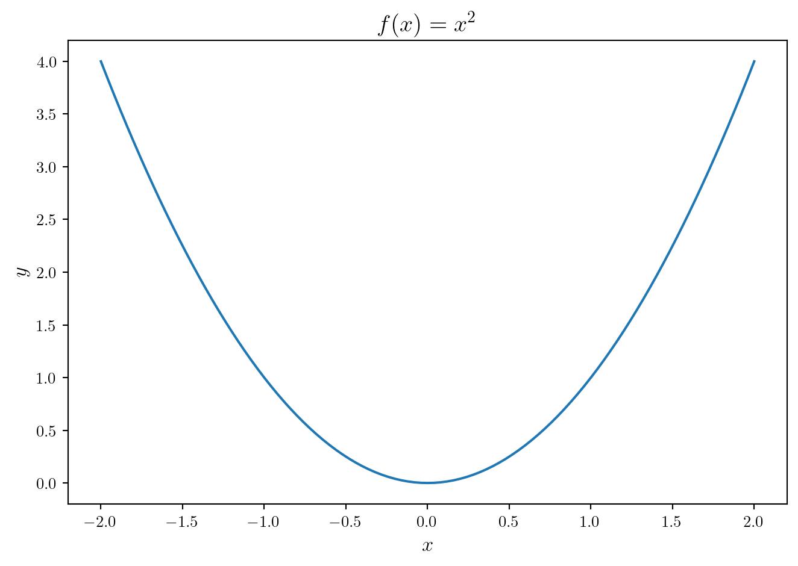
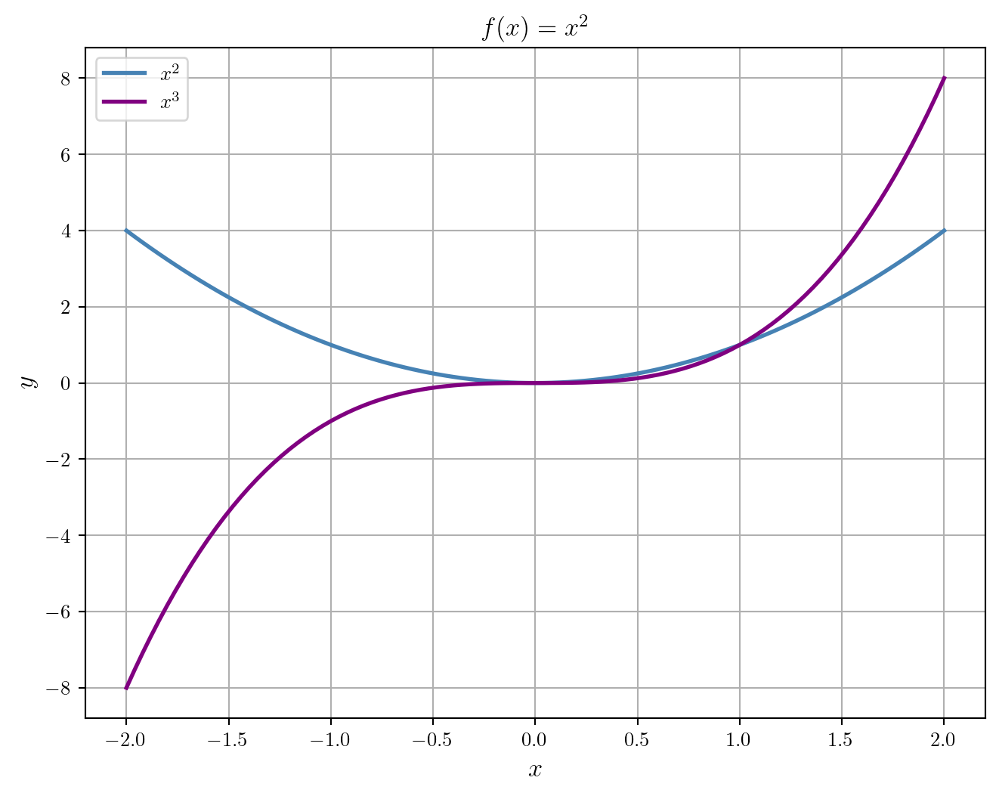
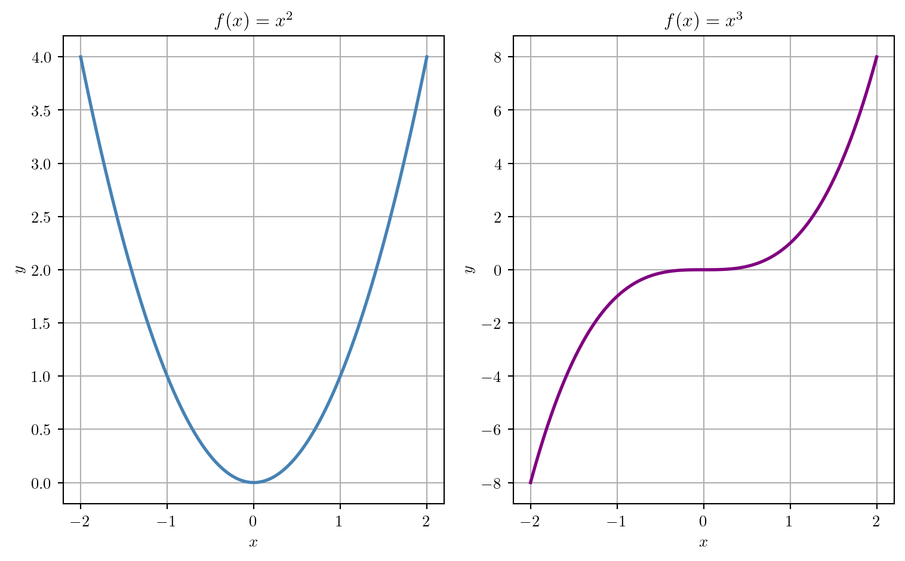

from numpy import sin, pi
sin(pi/4)0.7071067811865475
Scientific computing software plays a major role in biomathematics for many reasons some of which include:
The complexity of biological systems leads to models or equations that are difficult to work with analytically but can be handled reasonably well by numerical methods.
The need to synthesize theoretical models and data from experiments.
Plots and other visualizations are important for understanding and communicating scientific ideas and results.
Computing allows us to use theoretical models to conduct experiments in silico that would be difficult or impossible to conduct otherwise.
Thus, this course will make use of scientific computing software. Three commonly used free and open-source languages for scientific computing in biomathematics are R, Julia, and Python. In this course, we will mostly use R, but it’s worth knowing at least a little about scientific computing in all three languages as each of them has its own strengths and weaknesses in the context of scientific computing for biomathematics. The goal is not to teach you to become an expert in any of these languages, but rather to become familiar with how to use them to solve some basic problems in biomathematics. Thus, this document is more of a reference than a tutorial.
This page will focus on Python. The other two languages have their own pages:
Each of these pages will have a similar structure to this one. We do not provide details on or even an introduction to the basics of programming or the structure of any of the languages. There are many resources available for learning these things. Instead, we focus on providing some concise examples of the use of these languages for scientific computing in biomathematics. The hope is that the reader will be able to copy and modify these examples to solve their own problems.
The section titles listed in the table of contents for the page should indicate the topics or types of problems we provide examples for. For some of the more involved code, we provide links to additional webpages that provide more details. In some cases, we provide links to potentially helpful videos or web sites where the reader can learn more.
Python is an elegant an mature general-purpose programming language (Van Rossum and Drake 2009). You can learn more about the history of Python here.
As in R, most of the algorithms and methods we will want to use in solving problems in biomathematics are implemented as functions in Python. However, base Python contains very few functions useful for mathematics or scientific computing. Most of the functions we will need are contained in modules. A module is a collection of functions and other objects that can be imported into Python. There are many modules available for scientific computing in Python. We will focus on a few of the most commonly used ones such as
NumPy: Numerical Python, offers comprehensive mathematical functions, random number generators, linear algebra routines, Fourier transforms, and more.
SciPy: Scientific Python, provides algorithms for optimization, integration, interpolation, eigenvalue problems, algebraic equations, differential equations, statistics and many other classes of problems.
Matplotlib: Plotting in Python, is a comprehensive library for creating static, animated, and interactive visualizations in Python.
SymPy: Symbolic Python, is a library for symbolic mathematics.
py-pde: py-pde is a python package providing methods and classes useful for solving partial differential equations (PDEs).
One thing that is a little different working in Python (and also Julia) compared to R is that it’s common practice to utilize virtual environments to avoid conflicts between functions and objects from different modules. Environments also help keep track of different versions of the Python interpreter. We will not go into details about how to use environments here, but we will provide some links to resources that explain how to use them.
The most common tool in the scientific community for managing Python environments is Conda. Conda is a package manager that can be used to install Python and other software packages. It can also be used to create and manage virtual environments. Conda is available for Windows, Mac, and Linux. You can download and install Conda from here. To learn about using Conda, see the following video:
The nice thing about working with virtual environments is that we can easily share the environment with others. To do this, we can create a file called environment.yml that contains a list of all the packages we want to install in the environment. For example, the environment.yml file from the GitHub repository will create an environment called biomath_py that contains Python 3.9 and the NumPy, SciPy, Matplotlib, and SymPy modules among others.
Once we have set up and activated the environment, we can import modules and use functions from them. For example, to import the NumPy module and compute \(\sin\left(\frac{\pi}{4}\right)\), we can use the following code:
from numpy import sin, pi
sin(pi/4)0.7071067811865475Note that the Python version we are using here is
import sys
print("Python version:", sys.version)Python version: 3.8.18 | packaged by conda-forge | (default, Oct 10 2023, 15:46:56)
[Clang 16.0.6 ]import matplotlib.pyplot as plt
import numpy as np
plt.rcParams['text.usetex'] = True
x = np.linspace(-2.0, 2.0, 101)
y2 = np.power(x,2)
def f(x):
return np.power(x,2)
fig, ax = plt.subplots(figsize=(7, 5), tight_layout=True)
ax.set_xlabel(r'\textit{$x$}',fontsize=13)
ax.set_ylabel('\\textit{$y$}',fontsize=13)
ax.set_title(r'$f(x) = x^2$',fontsize=15)
ax.plot(x, f(x))
def g(x):
return np.power(x,3)
# Set custom figure size
plt.figure(figsize=(8, 6))
# Plot the curves
plt.plot(x, f(x), label=r'$x^2$', color='steelblue', linewidth=2)
plt.plot(x, g(x), label=r'$x^3$', color='purple', linewidth=2)
# Add labels and title
plt.xlabel(r'$x$',fontsize=13)
plt.ylabel(r'$y$',fontsize=13)
plt.title(r'$f(x) = x^2$',fontsize=13)
# Add legend
plt.legend()
# Show the plot
plt.grid(True)
plt.show()
# Create subplots
fig, (ax1, ax2) = plt.subplots(nrows=1, ncols=2, figsize=(8, 5))
# Plot y = x^2
ax1.plot(x, f(x), color='steelblue', linewidth=2)
ax1.set_title(r'$f(x) = x^2$')
ax1.set_xlabel(r'$x$')
ax1.set_ylabel(r'$y$')
ax1.grid(True)
# Plot y = x^3
ax2.plot(x, g(x), color='purple', linewidth=2)
ax2.set_title(r'$f(x) = x^3$')
ax2.set_xlabel(r'$x$')
ax2.set_ylabel(r'$y$')
ax2.grid(True)
# Adjust layout to prevent overlap
plt.tight_layout()
# Show the subplots
plt.show()
import numpy as np
from scipy import linalgHere’s a vector:
my_vect = np.array([1.0,-1.0,1.0])
print(my_vect)[ 1. -1. 1.]Here’s a matrix:
my_matrix = np.array([[1.0, 0.0, -1.0],[3.0, 1.0, 2.0],[-1.0, 1.0, 2.0]])
print(my_matrix)[[ 1. 0. -1.]
[ 3. 1. 2.]
[-1. 1. 2.]]Here’s the matrix-vector product:
b_vect = my_matrix @ my_vect
print(b_vect)[0. 4. 0.]Here’s the determinant of the matrix:
matrix_det = linalg.det(my_matrix)
print(matrix_det)-4.0Here are the eigenvalues and eigenvectors of the matrix:
eig_vals, eig_vects = linalg.eig(my_matrix)
print(eig_vals)
print(eig_vects)[-0.73205081+0.j 2. +0.j 2.73205081+0.j]
[[ 0.23617375 -0.57735027 -0.49557222]
[-0.88141242 -0.57735027 0.13278818]
[ 0.40906493 0.57735027 0.85835626]]Here’s the solution to the linear system:
x_vect = linalg.solve(my_matrix, b_vect)
print(x_vect)[ 1. -1. 1.]To learn more, check out